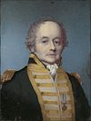

Interaction
Tools
Print/export
In other projects
Interaction
Tools
Print/export
In other projects
Ferugliotheriidae is one of three known families in the order Gondwanatheria, an enigmatic group of extinct mammals. Ferugliotheriids coexisted with dinosaurs, mainly during the Late Cretaceous epoch (84–66 million years ago) in Argentina, where they may have lived in a marshy or seashore environment. Genera in the family, including Trapalcotherium and Argentodites, are known from isolated low-crowned teeth and possibly a fragment of a lower jaw. The best-known representative of the family is Ferugliotherium windhauseni, a small mammal, around 70 g (2.5 oz), which may have eaten insects and plants. Ferugliotheriid incisors are long and procumbent and contain a band of enamel on only part of the tooth. The jaw fragment contains a long tooth socket for the incisor and bears a bladelike fourth lower premolar, resembling those of multituberculates. Low-crowned and bladelike teeth as seen in ferugliotheriids may have been evolutionary precursors of the high-crowned teeth of the family Sudamericidae.
(Full article...)
Ongoing: Battle of Mosul
Recent deaths: Mary Tyler Moore Leslie Koo Gorden Kaye Pete Overend Watts
January 26: Australia Day (1788); Republic Day in India (1950)
